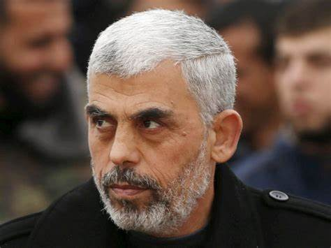
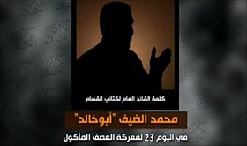
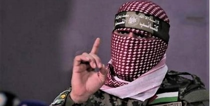

يحيى إبراهيم حسن السنوار (ولد في 29 أكتوبر 1962، مخيم خان يونس، فلسطين) هو سياسي فلسطيني وقيادي في حركة المقاومة الإسلامية (حماس)، ورئيس المكتب السياسي لها في قطاع غزة منذ 13 فبراير 2017، وأحد مؤسسي الجهاز الأمني لحركة حماس والذي سُمِّيَ جهاز الأمن والدعوة (مجد)، عام 1985، وهو الجهاز المخول بملاحقة جواسيس الاحتلال الصهيوني. وتضع إسرائيل يحيى السنوار هدفاً استراتيجياً لعملياتها الأمنية والاستخباراتية بالنظر إلى وزنه ونفوذه الكبير داخل القطاع. شقيقه هو القيادي في كتائب القسام محمد السنوار.
محمد دياب إبراهيم المصري (أبو خالد؛ ولد في غزة، 1965)، ويُعرف باسم محمد الضيف، هو قائد عسكري فلسطيني، والقائد العام لكتائب الشهيد عز الدين القسام الجناح العسكري لحركة المقاومة الإسلامية (حماس)، وأحد أهم المطلوبين للكيان الصهيوني منذ عام 1995؛ لقتله جنودًا إسرائيليين. اعتقله جيش الاحتلال سابقاً، واعتقلته السلطة الوطنية الفلسطينية (حركة فتح) سابقاً، وحاولت أجهزة المخابرات الصهيونية «الشاباك، والموساد» اغتياله أكثر من 7 مرات وفشلت، وأصيب إصابة بالغة في إحدى المحاولات. قَتَلَ الاحتلال الصهيوني عائلته، ودمّر بيته في إحدى هذه المحاولات عام 2014.
أضافت وزارة الخارجية الأمريكية الضيف إلى قائمتها للإرهابيين العالميين المصنفين في عام 2015.


أَبُو عُبَيْدَةَ هو المتحدثُ الرسميُّ الإعلاميُِّ لكتائبِ الشهيد عِزِّ الدِّينِ القَسَّامِ الجناحِ العسكريِّ لحركة المقاومة الإسلامية (حماس). ويعد أبو عبيدة من أوائل المطلوبين في قوائم الاغتيال الإسرائيلية نظرًا لاعتباره الشريان الرئيس للحرب النفسية ، والحرب الإعلامية التي تفرضها حماس. يُكنَّى بأبي عبيدة تيمنًا بالصحابي فاتح القدس أبي عبيدة بن الجراح في عهد الخليفة عمر بن الخطاب رضي الله عنه. أطلق العديد من الألقاب عليه منها الملثم، ويشرف بشكل مباشر على دائرة الإعلام العسكري في كتائب القسام. و يتميز بفصاحة اللسان و فن الخطابة.